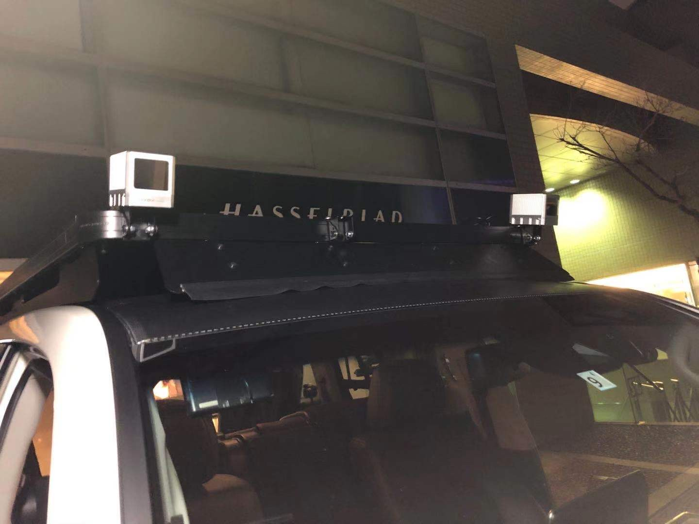
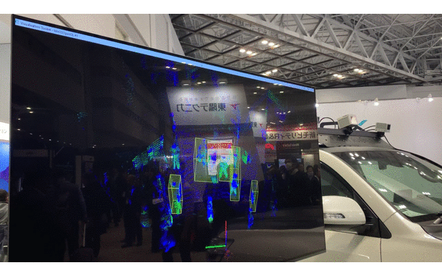

Realtime Obstacle Detection Demo using Livox Lidar
This is a note to record my very first experience of playing with lidar sensor. The lidar sensor I used is Livox, which is a product by a subcompany of DJI.
Start of the story
I joined this project at the end of 2019 and it is initialliy aimed to オートモーティブ ワールド 2020 held in Tokyo. For the show, we reformed a car to simulate real-world situation:

The Demo
I was assigned to build a demo program based on the lidar system. Realtime Obstacle Detection is the final topic we set considering on time resources. The final result will look like this:

Details
Unlike the other widely used lidar sensor (Velodyne), the Livox lidar has small fov but better point cloud density overtime due to the Non-repetitive Scanning (Scrolling down you will see what the scanning pattern it is).
In our demo, to overcome fov limit, we connect and sync 5 Livox-Horizon sensor (3 up roof and 2 in bumper) by a central hub.
The hub is used to automatically register point clouds from different sensors into a same coordinates. By using multiple sensors, we get not only larger fov but also richer point cloud.
The algorithm itself is not that difficult. We use mainly PCL for cleaning point cloud, grid-lize points, clustering points and finally draw a bounding box for each cluster.
ROS Driver
Livox SDK also provide a ros driver for ROS platform.
One thing need to be noticed is that the ros driver will send data to topic with device serial number as name suffix. And more, for Mid-100, because it have three individual sensors, the ros driver could choose the way of posting data as into three different topics or one.